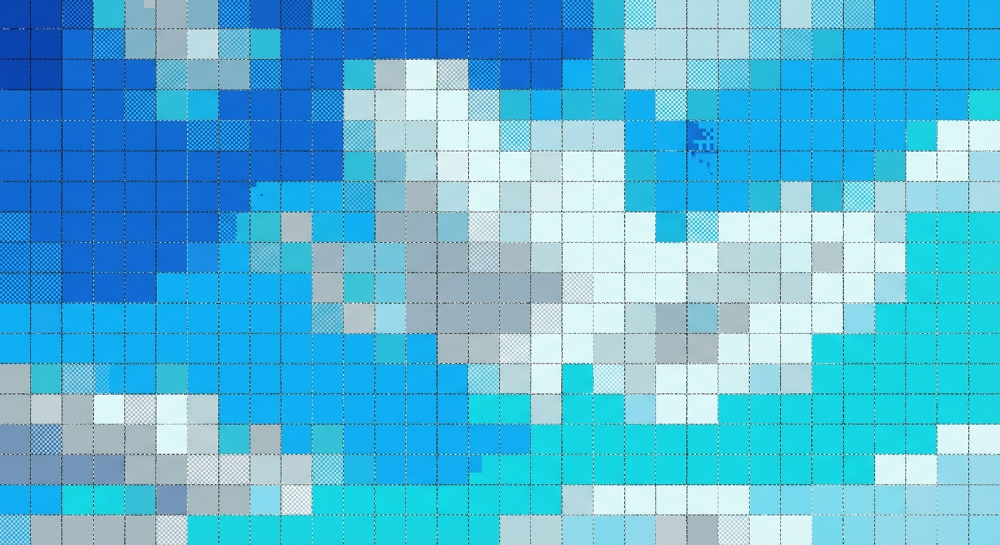
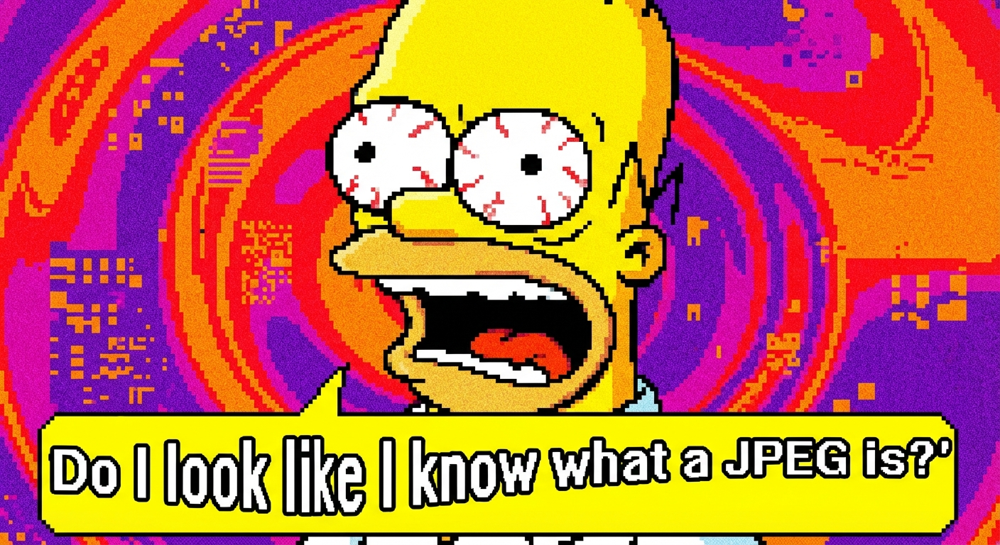

Welcome back! In the previous lesson, we transformed our image blocks into frequencies using the DCT. We organized the 'ingredients' of the image, but we haven't actually saved any space yet. We still have 64 numbers for every 8x8 block.
Now comes the brutal part of the process. It is the step where we decide what stays and what goes. It is the step that makes JPEG a 'lossy' format.
We call this step Quantization. It is essentially a strategic rounding-off process.
The goal is simple: We want to keep the important low-frequency numbers (the general shapes and brightness) precise, but we want to force the high-frequency numbers (the tiny details and noise) to become zero.
How do we force numbers to zero? We divide them by large numbers and round the result to the nearest integer.
Here is the formula used for every single coefficient in the 8x8 block:
$$ C_{quant}(u, v) = \text{round} \left( \frac{C_{DCT}(u, v)}{Q(u, v)} \right) $$
Let's break this down with a real example. Imagine we have a high-frequency detail in our image—maybe the texture of a cat's fur. After DCT, let's say this coefficient (\(C_{DCT}\)) has a value of 42.
Now, we look at our Quantization Table (\(Q\)). Since this is a high-frequency spot, the algorithm decides it's not very important, so the \(Q\) value is high, let's say 50.
We apply the formula: $$ \frac{42}{50} = 0.84 $$
Finally, we round it to the nearest integer: $$ \text{round}(0.84) = 0 $$
See that? The detail was 42. But now, it is 0. That information is gone forever. But on the bright side, writing a '0' takes up way less space than writing '42'.
This rounding to zero is the secret sauce of compression. If we use a lower quality setting, the divisor (50) becomes an even bigger number (like 100), making it even more likely that the result rounds to zero.
You've likely seen a 'Quality' slider when saving a JPEG in Photoshop or other software. You are actually controlling that \(Q\) table.
When you slide to 'Low Quality', you are telling the algorithm: "I don't care about details, just give me a small file." The algorithm responds by dividing by huge numbers, turning almost everything into zeros.
After quantization, our 8x8 block looks very different. The top-left corner has non-zero numbers (the important stuff), but the bottom-right is now a wasteland of zeros.
Computers love long strings of zeros. It's much more efficient to say "twelve zeros" than "zero, zero, zero...". To maximize this, we don't read the block row-by-row. We read it in a Zigzag pattern.
This "Zigzag Scan" organizes the data so that all the zeros are grouped together at the end of the list, making the file size incredibly tiny.
We've talked about throwing away data. Usually, our eyes don't notice. But if we are too aggressive—if we set that Quality slider too low—the cracks start to show. These visual errors are called Compression Artifacts.
The most common one is Blocking. Remember how we chop the image into independent 8x8 blocks? If we compress too hard, the boundaries between these blocks become visible.
Another common issue is Ringing or "Mosquito Noise". This looks like fuzzy dirt buzzing around sharp edges, like text or high-contrast lines. It happens because we deleted the high-frequencies needed to draw a sharp, clean line.
You've definitely seen this online. In fact, it's become a style of its own.
The process of constraining a large set of values (coefficients) to a discrete set (integers) by dividing and rounding. This is the primary source of information loss in JPEG.
Answer: No. This is the definition of 'Lossy'. Look at our math example again: We had 42, divided by 50, and rounded to 0. If I give you the number 0 and tell you 'I divided X by 50 to get this', X could have been 10, 20, or 42. You can never know for sure. The data is lost.
This is why you should never edit and re-save a JPEG repeatedly. Every time you save, you run the quantization step again, and you lose more data. It's like making a photocopy of a photocopy.
You have survived the most mathematical and destructive part of image compression.
In this lesson, we learned that:
In the next and final lesson of this chapter, we will zoom out and look at the entire pipeline from the camera lens to the final file, putting all these pieces together.